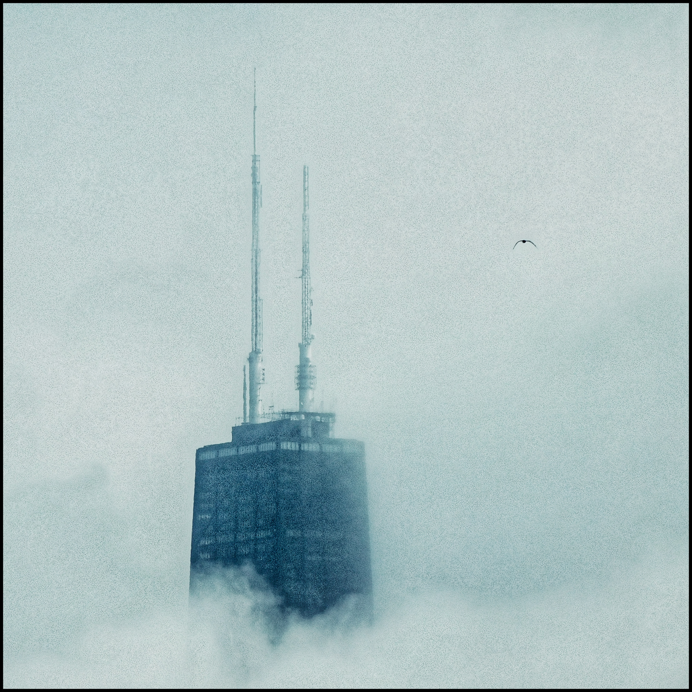
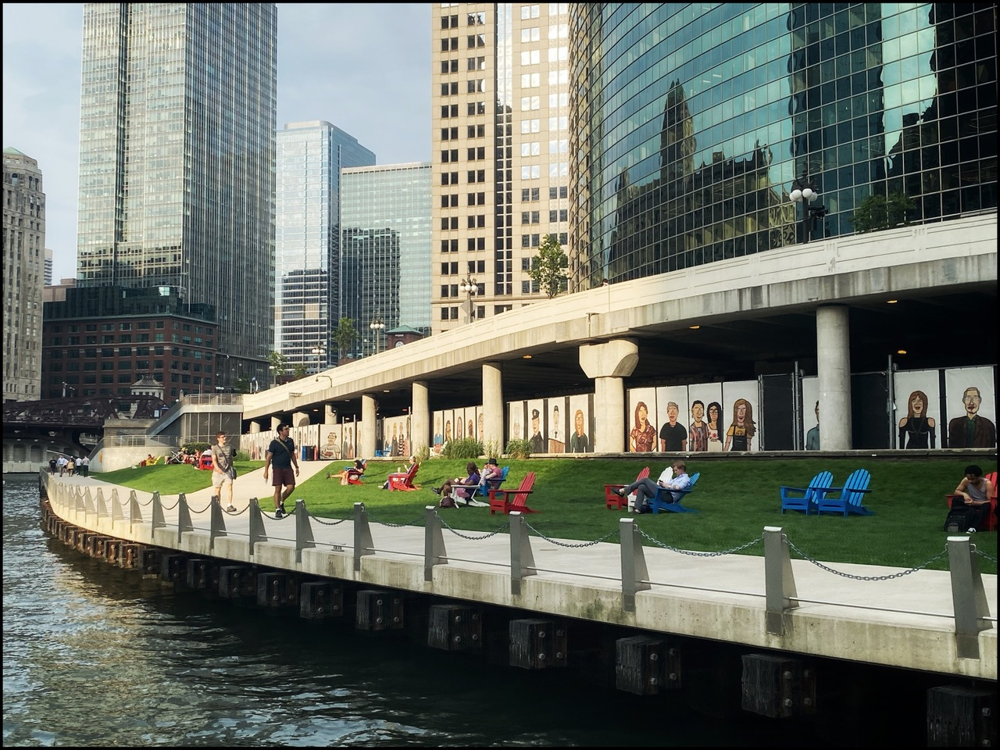
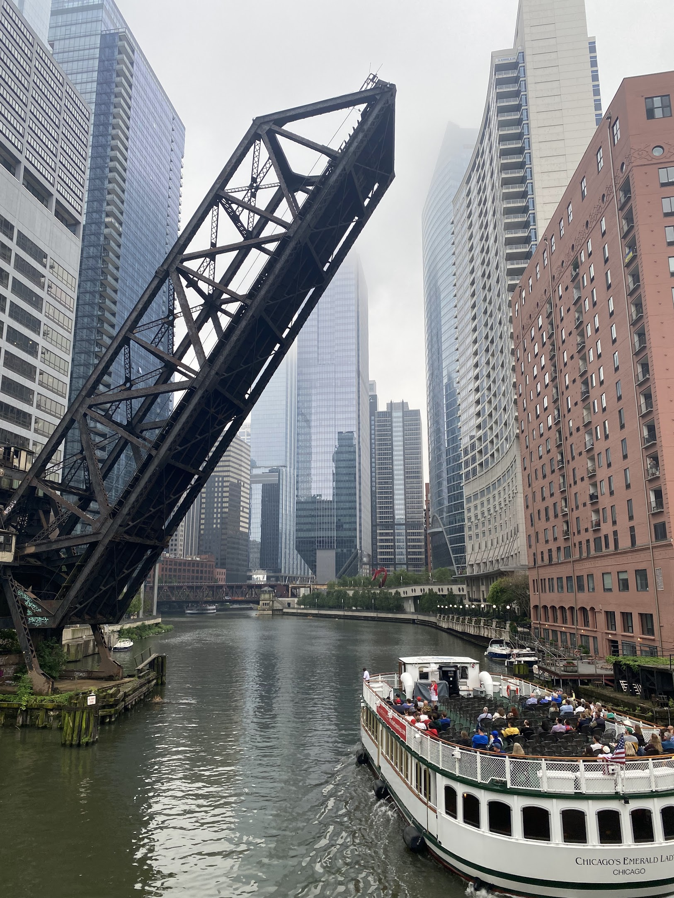
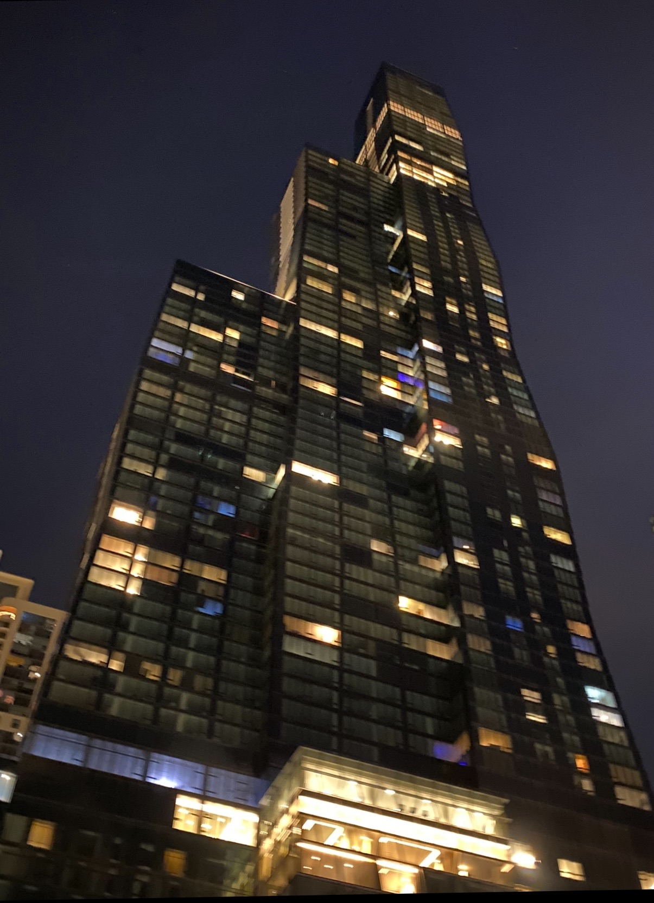
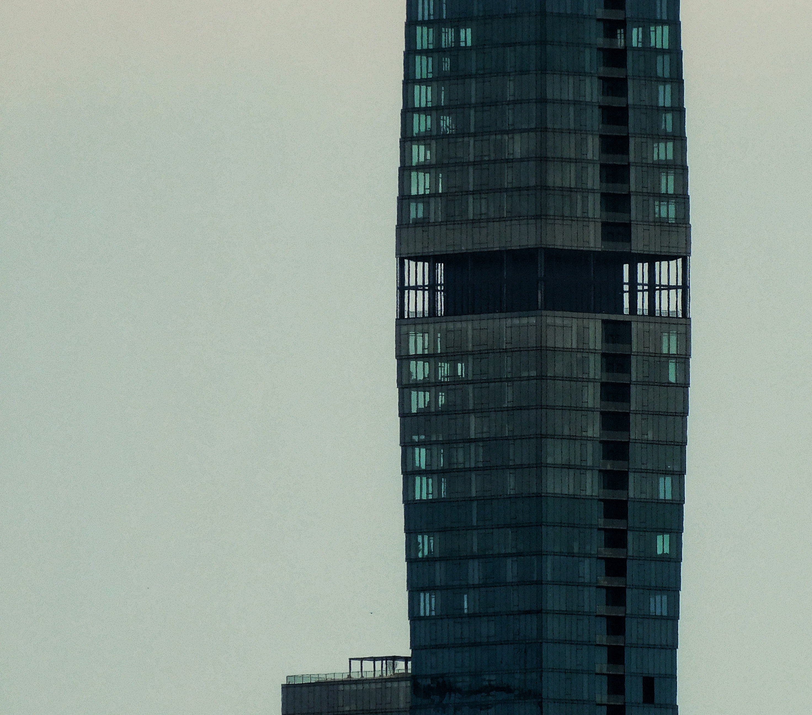
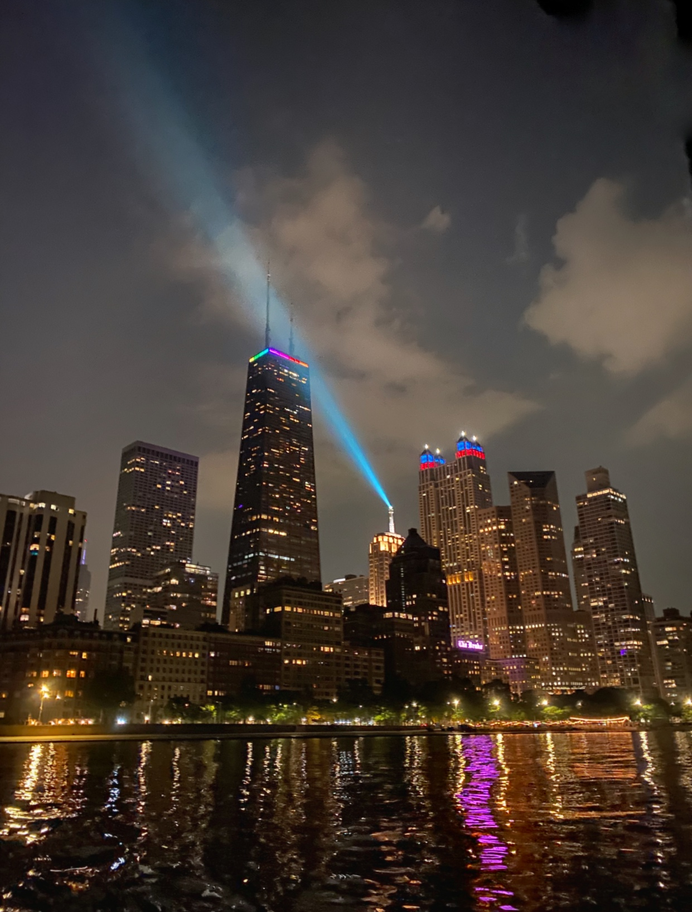
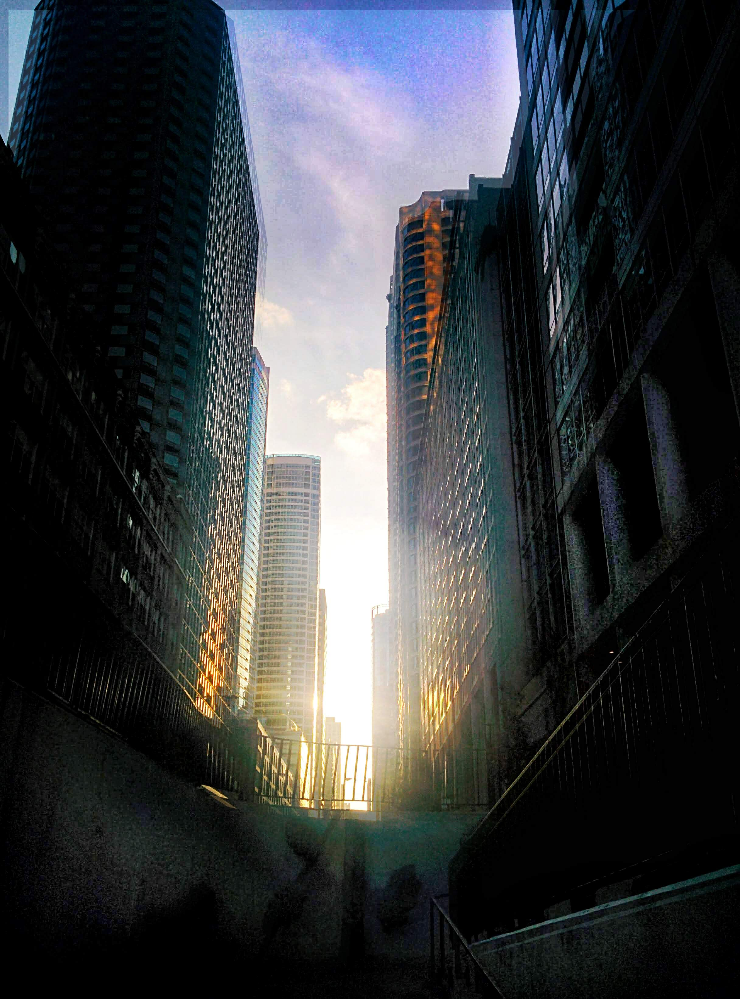
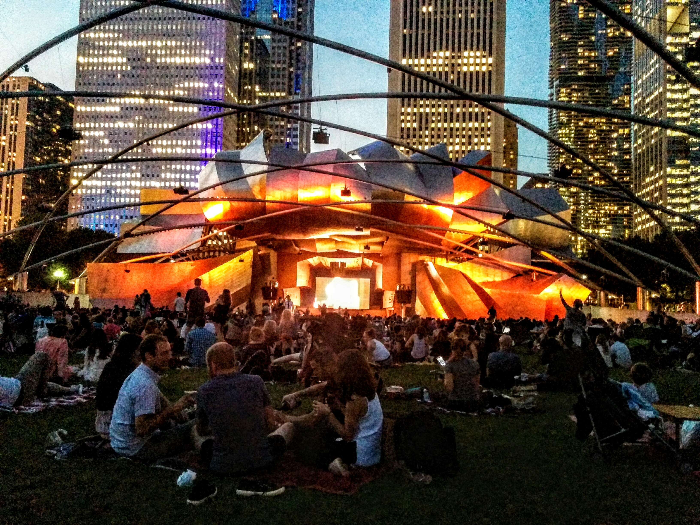

Steel, Stone, and Stars: The Architectural Symphony of the Chicago Skyline
Widely regarded as the birthplace of the modern skyscraper, the Chicago skyline is a world-class architectural marvel that stretches along the scenic shores of Lake Michigan. Its history is rooted in the Great Chicago Fire of 1871, a tragedy that cleared the way for a generation of ambitious architects to experiment with steel-frame construction and vertical design. Today, the city boasts a dense collection of over 130 skyscrapers, featuring a mix of historic Neo-Gothic spires, mid-century modern "black boxes," and contemporary glass towers with undulating facades.

The skyline is dominated by several of the tallest buildings in the Western Hemisphere, most notably the Willis Tower (formerly the Sears Tower). Standing at 1,451 feet, it held the title of the world's tallest building for 25 years and remains iconic for its "bundled tube" design. Other pillars of the skyline include the 875 North Michigan Avenue building (formerly the John Hancock Center), famous for its distinctive exterior X-bracing, and the St. Regis Chicago, which currently stands as the tallest building in the world designed by a woman, Jeanne Gang.

For those visiting, the skyline is best experienced through its famous observation decks, such as the Skydeck at Willis Tower, which features "The Ledge" — glass boxes that extend out from the 103rd floor. From the ground, the Chicago Riverwalk and architectural boat tours provide an intimate perspective on how these massive structures interact with the city's unique geography. Whether viewed at sunset when the glass reflects the gold of the lake or at night when the city lights glitter, the Chicago skyline remains one of the most photographed and celebrated urban landscapes in the world.






About the author: Ethan Cotton ↗
Did you enjoy this article?
Leave a comment